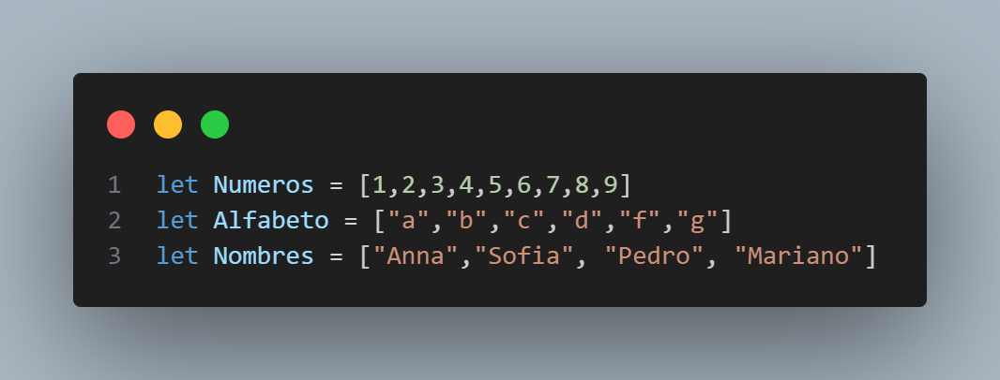

Tipos de datos
Existen varios tipos de datos que se utilizan para almacenar diferentes tipos de valores. A continuación, te muestro los tipos de datos más comunes en JavaScript
Variables: var VS let
VAR: En JavaScript, la palabra reservada "var" se utiliza para declarar una variable. Antes de la introducción de "let" y "const" en ECMAScript 6 (ES6), "var" era la única forma de declarar una variable en JavaScript.
Es importante destacar que las variables declaradas con "var" tienen ámbito de función, lo que significa que están limitadas al bloque de función en el que se declaran. Si se declaran dentro de una función, no estarán accesibles fuera de ella.
Otra particularidad de "var" es que no respeta el ámbito de bloque, lo que significa que incluso si se declara una variable dentro de un bloque (por ejemplo, dentro de un "if" o un "for"), la variable será accesible fuera de ese bloque.
LET: A partir de ES6, se introdujeron las palabras clave "let" y "const" para declarar variables. Estas palabras clave ofrecen un ámbito de bloque más estricto y reemplazaron en gran medida el uso de "var" en la práctica moderna de JavaScript. Se recomienda utilizar "let" y "const" en lugar de "var" siempre que sea posible.
En JavaScript, la palabra clave let se utiliza para declarar una variable local en el ámbito de bloque en el que se declara. Antes de la introducción de let en ES6 (también conocido como ECMAScript 2015), solo se podían declarar variables con la palabra clave var, y estas variables eran de ámbito de función o global.
La diferencia entre let y var es que let declara una variable que es de ámbito de bloque, lo que significa que solo es accesible dentro del bloque en el que se declara. En cambio, var declara una variable de ámbito de función, lo que significa que puede ser accesible dentro de la función en la que se declara o, si no está dentro de una función, globalmente.
Además, si intentas redeclarar una variable con la palabra clave let dentro del mismo ámbito de bloque, se producirá un error, mientras que con var, se sobrescribirá la variable existente.
Constantes ( const )
En JavaScript, la palabra clave const se utiliza para declarar variables con valores que no cambiarán después de su asignación. Una vez que una variable ha sido declarada con const y se le ha asignado un valor, ese valor no puede ser cambiado.
La sintaxis para declarar una variable con const es la siguiente:
Cadenas de Texto ( Strings )
En JavaScript, un string (o cadena de caracteres) es una secuencia de caracteres encerrados entre comillas simples (') o dobles ("). Los strings pueden contener cualquier tipo de caracteres, incluyendo letras, números, signos de puntuación y espacios en blanco.
Aquí hay algunos ejemplos de strings en JavaScript:

En el primer ejemplo, se declara una variable llamada nombre que contiene el string "Juan". En el segundo ejemplo, se declara una variable llamada mensaje que contiene el string "Hola, 쯖칩mo estás?". En el tercer ejemplo, se declara una variable llamada direccion que contiene el string 'Calle Mayor, 10'.
Es importante tener en cuenta que los strings son inmutables en JavaScript, lo que significa que una vez que se crea un string, no se puede cambiar su valor. Sin embargo, se pueden manipular los strings utilizando métodos de string incorporados en JavaScript, como toUpperCase() para convertir un string a mayúsculas o substring() para extraer una parte del string original.
Plantillas de cadenas de texto ( Template Strings )
Las template strings (también conocidas como template literals) son una característica de JavaScript que permite crear strings de manera más fácil y legible, especialmente cuando se necesita incluir valores de variables o expresiones en el string.
Aquí hay un ejemplo de cómo se utiliza una template string:
La sintaxis de las template strings utiliza las comillas invertidas o backticks () en lugar de las comillas simples o dobles. Además, se puede incluir cualquier expresión dentro de ${}`, que se evalúa y se concatena dentro del string.
Números ( Numbers )
En JavaScript, los números se representan mediante el tipo de datos number. Los números pueden ser enteros (por ejemplo, 10, -5, 0) o números con decimales (por ejemplo, 3.14, -2.5, 0.0).
Aquí te muestro algunos ejemplos de cómo trabajar con números en JavaScript:
JavaScript admite todas las operaciones matemáticas comunes, como la suma, la resta, la multiplicación y la división, así como algunas operaciones más avanzadas, como el cálculo de potencias y raíces cuadradas.
Booleans
En JavaScript, los valores booleanos se representan mediante el tipo de dat os boolean. Un valor booleano puede ser true (verdadero) o false (falso).
Aquí te muestro algunos ejemplos de cómo trabajar con valores booleanos en JavaScript:

Los valores booleanos son muy útiles en programación, ya que se utilizan frecuentemente en estructuras de control de flujo, como las sentencias if, while y for, para controlar el flujo de ejecución del programa.
undefined, null & NaN
En JavaScript, null es un valor especial que representa la ausencia intencional de cualquier objeto o valor. Por otro lado, undefined es un valor que se utiliza para indicar que una variable no ha sido inicializada o que no tiene ningún valor asignado.
En términos más simples, null significa que una variable está intencionalmente vacía, mientras que undefined significa que una variable no tiene ningún valor asignado.
Es importante tener en cuenta que null y undefined no son lo mismo que una cadena vacía ('') o el número cero (0). Las cadenas vacías y los números cero son valores válidos en JavaScript y se tratan como tales, mientras que null y undefined indican la ausencia de un valor.
En JavaScript, NaN es un valor especial que representa "Not a Number" (no es un número). NaN se utiliza cuando se realiza una operación matemática que no tiene un resultado numérico definido, como dividir cero por cero o tomar la raíz cuadrada de un número negativo. Aquí te muestro algunos ejemplos de cómo trabajar con NaN en JavaScript:

Funciones
Las funciones son una parte fundamental de JavaScript. Una función es un bloque de código que se puede llamar en cualquier momento para realizar una tarea específica. Las funciones en JavaScript se definen utilizando la palabra clave function.
Aquí hay un ejemplo de una función simple en JavaScript:
En este ejemplo, hemos definido una función llamada greet que toma un parámetro name. La función utiliza la función console.log() para imprimir un mensaje de saludo en la consola del navegador. Luego, hemos llamado la función dos veces, pasando diferentes valores para el parámetro name.
También es posible que una función devuelva un valor. Aquí hay un ejemplo:

Arreglos ( Arrays )
Un array (también conocido como arreglo o matriz) es una estructura de datos en programación que permite almacenar y organizar un conjunto de valores relacionados del mismo tipo en una sola variable.
En términos simples, un array es una colección ordenada de elementos del mismo tipo (como números, cadenas de texto, objetos, etc.) que se almacenan en una memoria contigua y se acceden mediante un índice numérico. El índice comienza en cero y aumenta en uno para cada elemento adicional en el array.
Por ejemplo, si queremos almacenar una lista de cinco números enteros, podemos crear un array de cinco elementos donde cada elemento es un número entero. Luego podemos acceder a cada elemento individualmente utilizando su índice correspondiente (0 para el primer elemento, 1 para el segundo elemento, y así sucesivamente).
Objetos
En JavaScript, los objetos son una estructura de datos que nos permiten almacenar y organizar datos relacionados en una sola entidad. Los objetos en JavaScript son colecciones de propiedades y métodos, y se definen utilizando llaves {}.
Aquí hay un ejemplo de un objeto simple en JavaScript:

En este ejemplo, hemos cambiado el valor de las propiedades nombre y edad, y hemos agregado una nueva propiedad llamada profesion. Luego, hemos utilizado la función console.log() para imprimir el objeto completo en la consola del navegador.

Los objetos en JavaScript son muy flexibles y se pueden utilizar para representar casi cualquier tipo de estructura de datos. También es posible crear objetos anidados y acceder a las propiedades de un objeto utilizando la notación de puntos o la notación de corchetes.